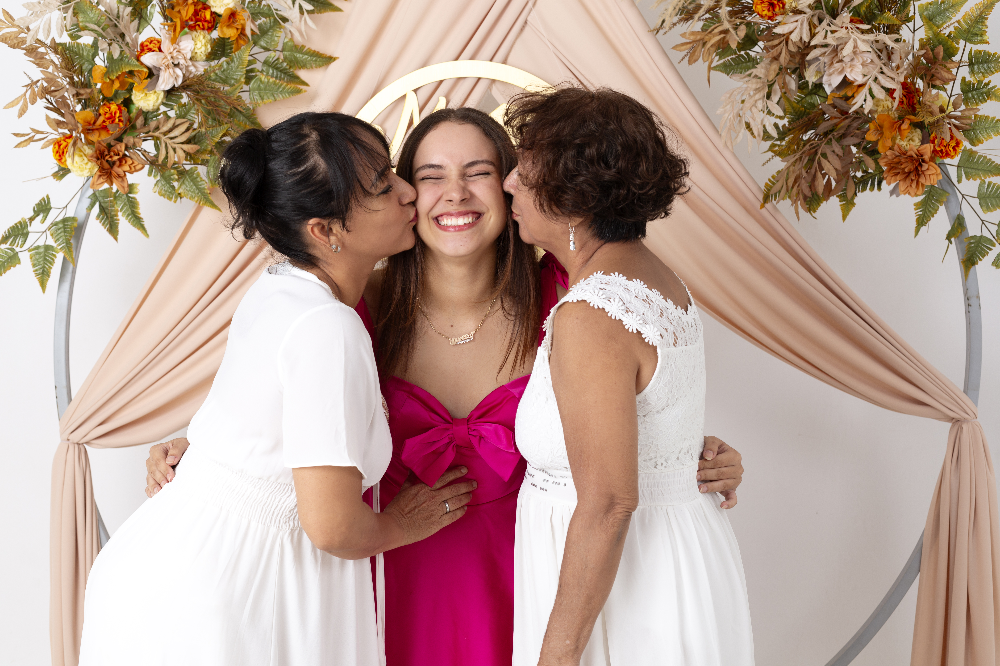
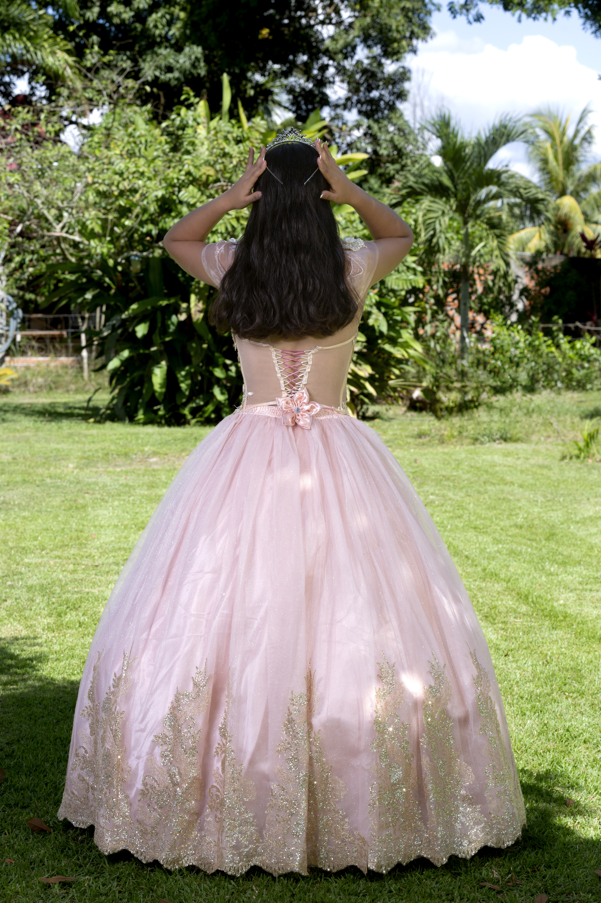
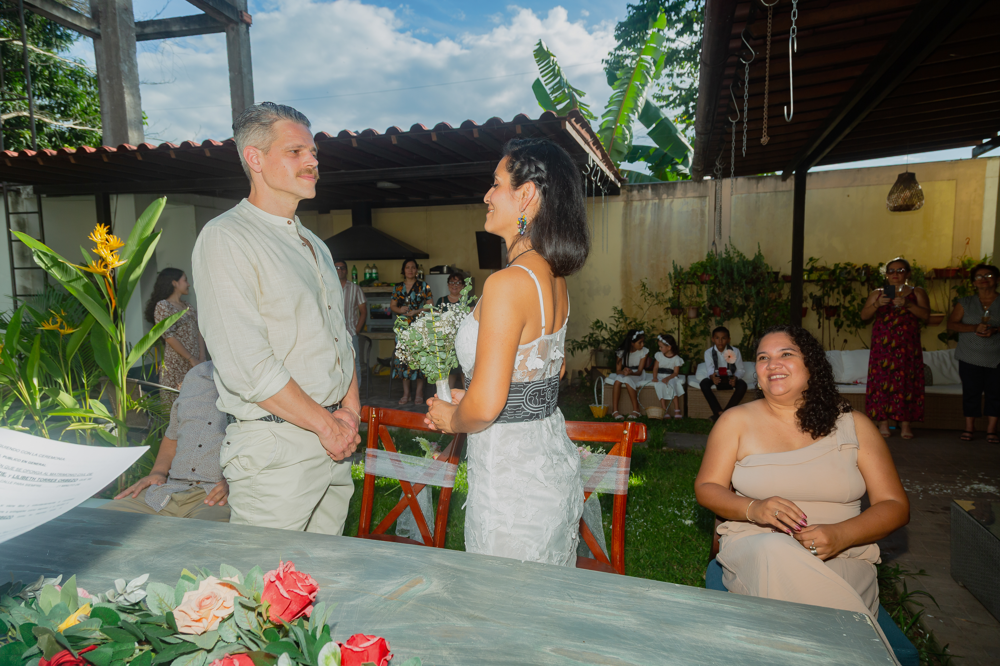
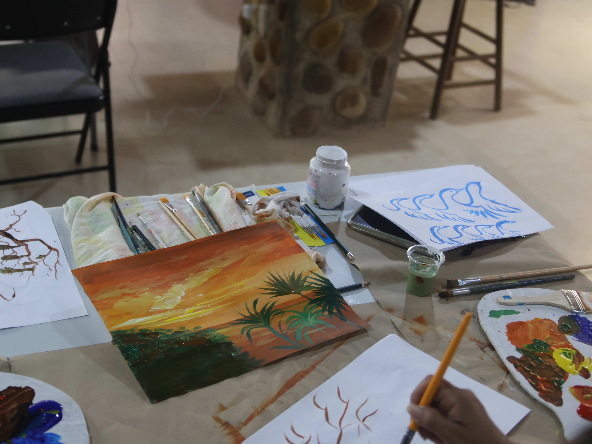
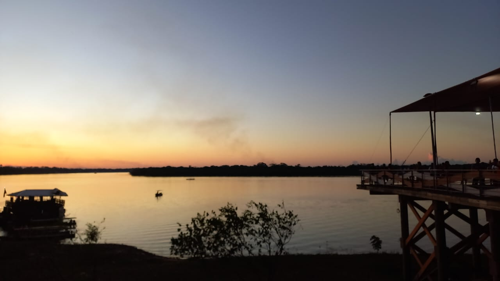
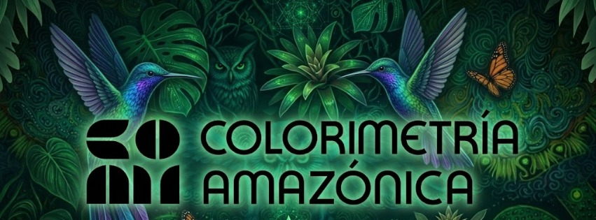

Book personalRetratos con identidad
Galería fotográfica
Las imágenes de Studio 13
Un recorrido visual por sesiones, celebraciones, eventos y propuestas creativas realizadas con dirección, luz y una mirada cercana a cada persona.



Retratos
Presencia, gesto y carácter.
Sesiones personales, familiares y de marca con una dirección visual sobria y expresiva.

DirecciónLuz y composición

EditorialImagen profesional
Eventos
Cobertura clara, completa y oportuna.
Registro fotográfico para instituciones, marcas, activaciones y reuniones especiales.
Del ambiente al detalle.
Cuidamos planos generales, momentos espontáneos, retratos de asistentes y material listo para comunicación digital.
Cotizar evento
Creativa
Conceptos visuales para destacar.
Producciones con color, atmósfera y composición pensadas para campañas, artistas y marcas personales.

Celebraciones con memoria visual.
Quinceaños, bodas, familia y fechas especiales narradas con elegancia y detalle.